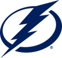

Нэшвилл — Тампа-Бэй: прогноз на матч 31 октября 2026
НХЛ · суббота, 31 октября · 21:00 МСК
Нэшвилл
—
Тампа-БэйПрогноз зашёлСчёт 5:4 Б
Тотал матча больше 5,5
1,71
Вероятность по модели62%
Линия на основное время
П13,21
Х4,33
П21,94
Форма команд
Нэшвилл
- П30.10дома — Вашингтон3:4
- П28.10дома — Айлендерс3:4 Б
- В26.10дома — Колорадо6:2
Тампа-Бэй
- В30.10дома — Виннипег6:4
- П25.10в гостях — Юта4:5 ОТ
- П24.10в гостях — Колорадо3:6
Что говорит модель
Модель разыграла матч 10 000 раз: прогноз сыграл в 58% розыгрышей.
3:3676 раз2:2667 раз2:3472 раз
Цифра матча: у Тампы такое событие было в 8 из 12 игр сезона.